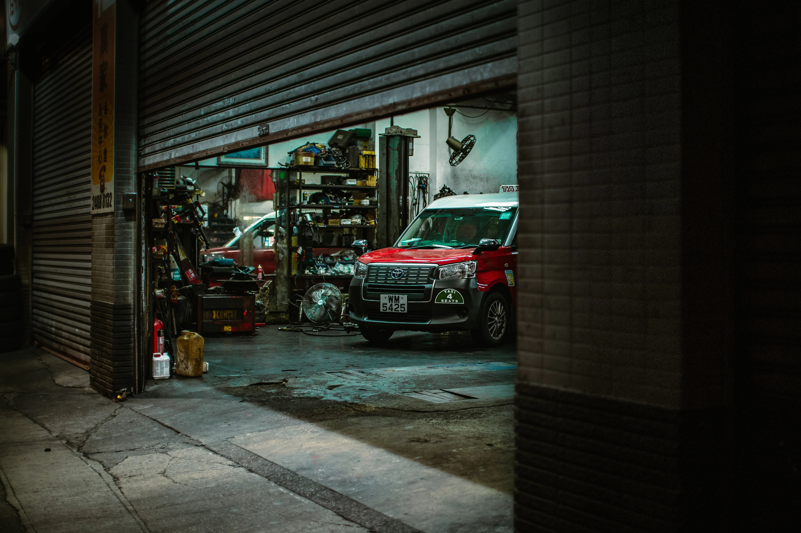
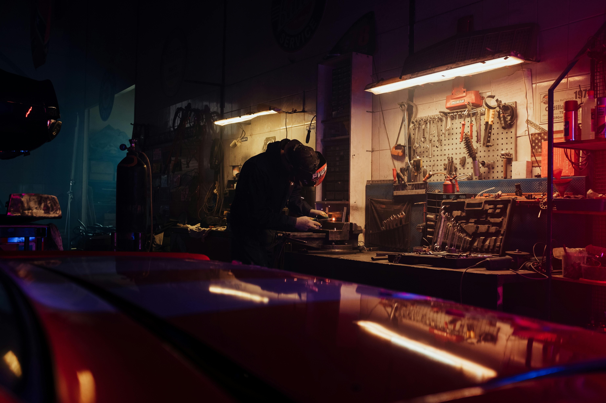
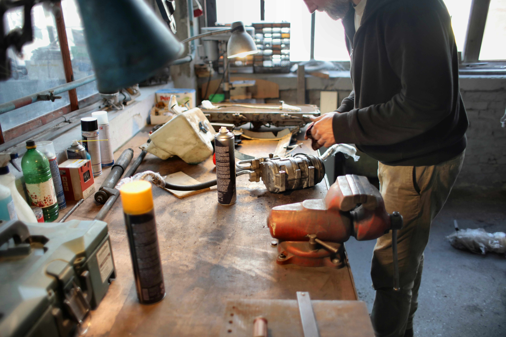

Servicio mecánico profesional para autos y motos.

Servicio rápido y profesional para mantener tu motor en perfecto estado.
Revisión y reparación completa del sistema de frenos.
Diagnóstico y reparación avanzada para autos y motos.

